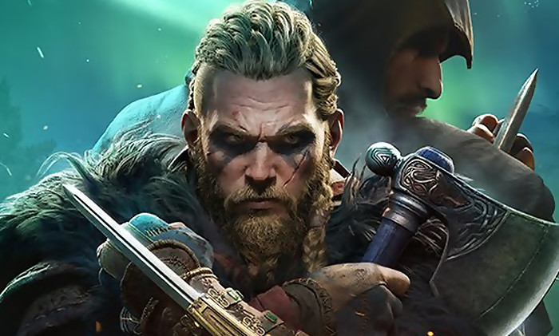

Assassin's Creed Valhalla est un jeu vidéo d'action-aventure et de rôle, développé par Ubisoft Montréal et édité par Ubisoft sur Microsoft Windows, PlayStation 4, PlayStation 5, Xbox One, Xbox Series et Google Stadia. Il appartient à la série Assassin's Creed et en est le douzième opus canonique. La sortie du jeu est prévue pour fin 2020. L'action principale du jeu se déroulera pendant l'ère viking.
Histoire: Assassin's Creed Valhalla prend place à la fin du IXe siècle dans le cadre des raids vikings en Angleterre. Le joueur incarne Eivor, un viking qui mène ses camarades de Norvège dans des raids et des combats contre le roi Alfred le Grand et les quatre royaumes anglo-saxons : Wessex, Northumbrie, Est-Anglie et Mercie2,3. Bien que le jeu soit conçu pour être historiquement précis, des éléments de la mythologie nordique apparaîtront dans l'histoire mais au travers d'Eivor et des autres vikings, qui peuvent prendre des événements inhabituels comme des signes de l'implication de leurs dieux, d'après le directeur créatif du jeu, Ashraf Ismail. De plus, le jeu continuera de suivre les événements modernes liés à Layla Hassan, chercheuse d'Abstergo Industries (présentée danns les anciens jeux).

Watch Dogs Legion
Watch Dogs: Legion, typographié WATCH DOGS LΞGION (trad. litt. : « Les chiens de garde : Légion »), est un jeu vidéo d'action-aventure et d'infiltration développé par le studio d'Ubisoft Toronto, en coproduction avec Ubisoft Montreal, Ubisoft Paris, Ubisoft Bucarest et Ubisoft Kiev, et édité par Ubisoft. Suite de Watch Dogs 2 sorti en 2016, le jeu est officialisé au cours de l'E3 20191 et annoncé le 12 juillet 2020 lors de la conférence Ubisoft Forward pour le 29 octobre 2020 sur PlayStation 4, Xbox One, Microsoft Windows et Stadia. Le jeu sort également sur PlayStation 5 et Xbox Series au moment de leur sortie respective en novembre 2020.
Histoire: Avec Watch Dogs: Legion, le joueur quitte les États-Unis présent dans les deux premiers épisodes et direction Londres. Alors que l'ancien espion Dalton Wolf, devenu membre de Dedsec, tente de désamorcer une bombe dans les sous-sols des Maisons du Parlement, il découvre que plusieurs autres bombes ont été placées dans des endroits stratégiques de la ville. Sur place, les autres membres de Dedsec, dont Sabine Brandt, s'y rendent mais sont attaqués par un groupes d'hommes en noir. Dalton n'a guère de chance puisqu'il se fait tuer par un de ces hommes en noir qui lui annonce : "Zero Day commence maintenant !" Suite à l'explosion des bombes restantes, le gouvernement démissionne et Nigel Cass, chef du groupe paramilitaire Albion prend le pouvoir. Il jure de décimer tous les membres de Dedsec qu'il accuse (à tort) d'être les poseurs de bombes. La presse et certains londoniens le suivent. Dedsec est aux abois. Sabine, qui a survécu à l'attaque, cherche de nouveaux alliés pour poursuivre le combat.
lien d'achat